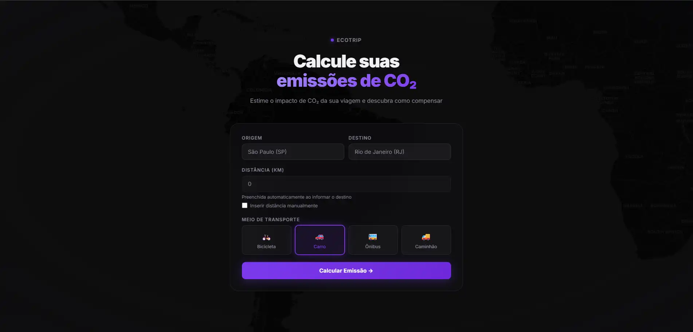
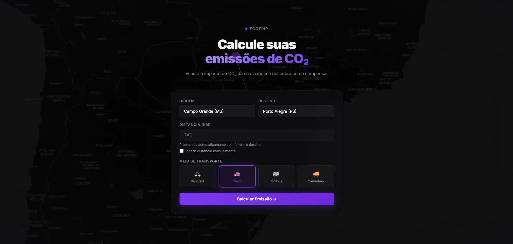
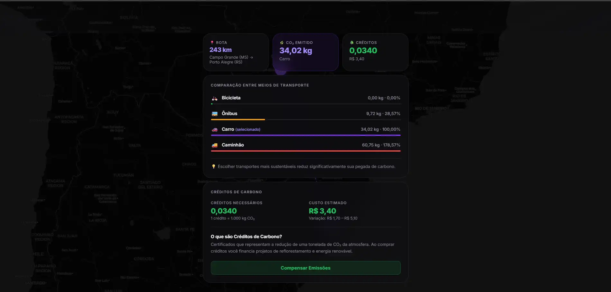

EcoTrip: Como Construí uma Calculadora de CO₂ com Python, Flask e Leaflet.js
Quando recebi o desafio de criar um projeto de calculadora de carbono, minha primeira reação foi: "mais um projeto CRUD?". Mas ao longo do desenvolvimento, o projeto foi ganhando camadas — um design system completo, um mapa interativo, cards de resultado animados e até um sistema de créditos de carbono. Neste artigo vou contar como foi essa jornada e o que aprendi no caminho.
Acessar o projeto → Repositório no GitHub →O problema
Calcular a emissão de CO₂ de uma viagem parece simples, mas envolve algumas variáveis interessantes:
- Fatores de emissão diferentes por modal (carro, ônibus, trem, avião)
- Perfil do trajeto (urbano, misto, rodovia)
- Número de passageiros (dividindo a emissão)
- Para aviões: distinção entre voos curtos e longos
A fórmula base é:
emissão = fator_modal × distância_km × multiplicador_perfil ÷ passageirosArquitetura: duas camadas independentes
Uma decisão importante logo no início foi separar a lógica de cálculo da interface. Isso resultou em duas camadas completamente independentes:
Camada 1 — Pacote Python (eco_trip/)
EMISSION_FACTORS = {
'car': 0.192, # kg CO2e por passageiro/km
'bus': 0.105,
'train': 0.041,
'plane_short': 0.254,
'plane_long': 0.146,
}
def estimate_emissions(distance_km, mode, profile='mixed', passengers=1):
if mode == 'plane':
key = 'plane_short' if distance_km < 1500 else 'plane_long'
else:
key = mode
factor = EMISSION_FACTORS[key]
multiplier = PROFILE_MULTIPLIER.get(profile, 1.0)
total = factor * distance_km * multiplier
return {
'total_kg_co2e': round(total, 6),
'per_passenger_kg_co2e': round(total / passengers, 6),
...
}Essa camada tem testes unitários completos e pode ser usada via CLI ou como API REST.
Camada 2 — Interface Web (GitHub Pages)
A interface é 100% estática — sem chamadas ao backend. Todo o cálculo roda no browser via JavaScript, o que permite hospedar gratuitamente no GitHub Pages.
O design: inspiração no Reflect.app

O design inicial era baseado em Material Design 3 (tema claro), mas durante o desenvolvimento decidi refatorar para um tema dark inspirado no Reflect.app — minimalista, fundo quase preto, glassmorphism nos cards e tipografia bold.
Os tokens visuais principais:
:root {
--bg: #0f0f13;
--accent: #7c3aed; /* roxo */
--green: #22c55e;
--yellow: #f59e0b;
--red: #ef4444;
}
.glass {
background: rgba(15,15,19,0.72);
border: 1px solid rgba(255,255,255,0.08);
backdrop-filter: blur(20px);
}O mapa com Leaflet.js

A feature mais interessante foi integrar um mapa interativo como background da página usando Leaflet.js com tiles gratuitos do CartoDB Dark.
O truque para o mapa funcionar como fundo fixo sem quebrar no scroll:
#map {
position: fixed; /* fixo no viewport */
inset: 0;
filter: brightness(0.35) saturate(0.6);
z-index: 0;
}Cada modal de transporte tem sua própria cor — e essa cor é usada tanto na borda do card selecionado quanto na linha da rota no mapa:
const ALL_MODES = [
{ emoji: '🚲', name: 'Bicicleta', factor: 0.00, color: '#22c55e' },
{ emoji: '🚌', name: 'Ônibus', factor: 0.04, color: '#f59e0b' },
{ emoji: '🚗', name: 'Carro', factor: 0.14, color: '#7c3aed' },
{ emoji: '🚚', name: 'Caminhão', factor: 0.25, color: '#ef4444' },
];
// A linha da rota e os marcadores usam a mesma cor do modal selecionado
routeLine = L.polyline([origem, destino], {
color: selectedColor,
dashArray: '8 6',
}).addTo(map);Cards de resultado

Após o cálculo, três cards aparecem com as informações principais, seguidos de um card de comparação entre modais com barras de progresso:
- Card 1 — Rota, distância e modal escolhido
- Card 2 — CO₂ emitido em kg (destaque visual)
- Card 3 — Créditos de carbono necessários e custo estimado
O card de créditos inclui um botão que abre um modal com o passo a passo para compensar as emissões, com links para plataformas certificadas como Verra, Gold Standard e MOSS Earth (brasileira, projetos na Amazônia).
Testes
O pacote Python tem cobertura completa de testes unitários:
def test_plane_short_vs_long(self):
r_short = estimate_emissions(500, 'plane', 'mixed', 1)
r_long = estimate_emissions(2000, 'plane', 'mixed', 1)
self.assertAlmostEqual(r_short['total_kg_co2e'], 0.254 * 500, places=6)
self.assertAlmostEqual(r_long['total_kg_co2e'], 0.146 * 2000, places=6)python -m unittest discover -s tests -v
# Ran 12 tests in 0.072s — OKDeploy no GitHub Pages
Como a interface é 100% client-side, o deploy é trivial:
- Copiar o HTML com paths relativos para /docs
- No GitHub: Settings → Pages → Source: main / /docs
- Pronto — live em https://usuario.github.io/repo/
O que aprendi
- Separar lógica de apresentação desde o início poupa muito retrabalho
position: fixedno Leaflet é a solução para mapas como background sem quebrar no scroll- CSS custom properties (
--mode-color) permitem tematizar componentes por estado de forma elegante - GitHub Pages é poderoso para projetos client-side — zero infraestrutura
Próximos passos
- Integrar API de geocodificação para calcular distâncias reais (atualmente simuladas)
- Rota real via OSRM (gratuito) em vez de linha reta
- Suporte a múltiplos segmentos de viagem na interface web